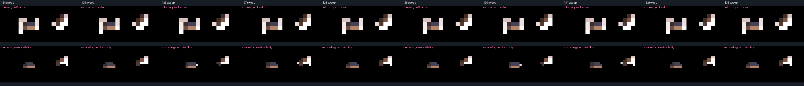
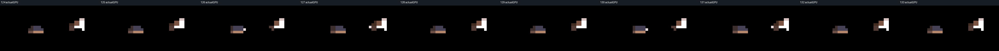
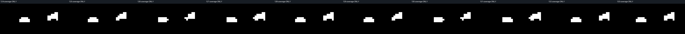

격리 실험. 제품77 유지. 전체 눈·최종 가림 안정화 완료가 아닙니다.
원본 Template216의20개 source 픽셀 영역을 pose homography로 투영한 뒤, 전체 눈의 공통 앵커를 뺀 로컬 격자에 coverage로 한 번 배치합니다. 파트별 top-K나 매 프레임 화면 nearest로 형태를 다시 고르지 않습니다. 이후 캐시된 파트/원색 인덱스 관계를 같은 연속 앵커로 움직이고 최종 native2x 화면에서만 래스터화합니다.


양수 가시량이 있는 후보 표본은37/36/33/40…개로 변합니다. 실제 최종 채택 픽셀 수가 아닙니다. RGB 그림은 원색 P만 표시하며,0.00392처럼 거의 가려진 표본도 밝게 보일 수 있습니다. 아래 coverage 그림과 함께 읽어야 합니다. 일반 alpha blending은 실행하지 않았으며, 이를 제품에 그대로 연결해 팔레트 밖 혼합색을 만들면 계약 위반입니다. 
124→125 실제 변경 좌표와 source 깊이/alpha: 같은 canonical(4,-1),iris/owner1/palette7가 유지되지만 source S3 안검 alpha0→.996078로 바뀌며 잔여 coverage1→.003922가 됩니다. 이 소량을 실제 셀 채택 보장으로 해석하지 않습니다.
다음 연결은 authored parent/iris와 실제 native 안검·aperture의 source 대응을 같은 feature-local frame에 묶어야 합니다. 전체 가림 캐시를 만들려면 다른 가림 객체의 실제 변형·material alpha 상태까지 검증된 키가 있어야 하며, 현재 없는 키를 추측해 화면 결과를 동결하면 안 됩니다. 현재 결과는 추가 미술 선택을 임의 확정한 전체 눈 디자인이 아닙니다.
Play0, global 변경0. GPU 전용 buffer/3RT/clone을 finally에서만 회수했고 빌린 자원을 해제하지 않았습니다. 입력mask최대163840B, 단일 readback11232B. RT30→30, native45/45 및 dirty29·동일 InputSettings 객체/22값·장치·씬·옵션 보존. 내부allocated −0.0555MiB는 물리RAM/누수 증명이 아닙니다. 실제 다중 렌더러/model교체 제품 수명은 미통합이며 pure cache 수명 반례만 검사했습니다.
처음 동적 컴파일의 using 형식 오류와 Interop namespace 거부는 GPU 미실행이었습니다. 해당 기능/struct 전송을 제거하고 일반 Unity Vector4 배열/16B버퍼로 컴파일·실행했습니다. 보안 설정은 변경하지 않았습니다.
원본/위상 수치 · GPU/복원 검증 · 22개 회귀 · 공동 배치/캐시 · 격리 GPU · 저장 입력 재검사
재검사: python -B test_saved88.py. source/H 재생성과72개 GPU 필드를 다시 비교합니다. 원본87 입력 provenance는 이전0aa4cf1 실험과 SOURCE_FIXTURE88에 연결됩니다. Unity를 다시 실행하지 않습니다.